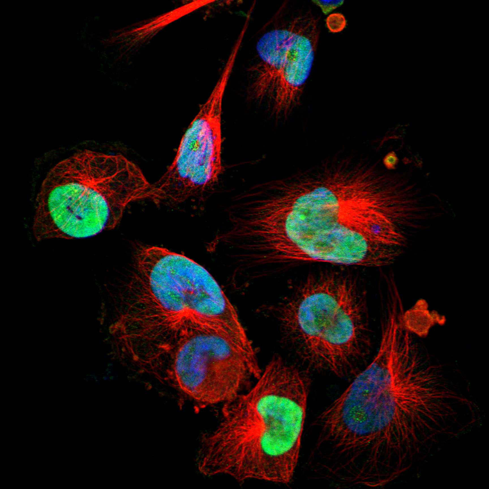
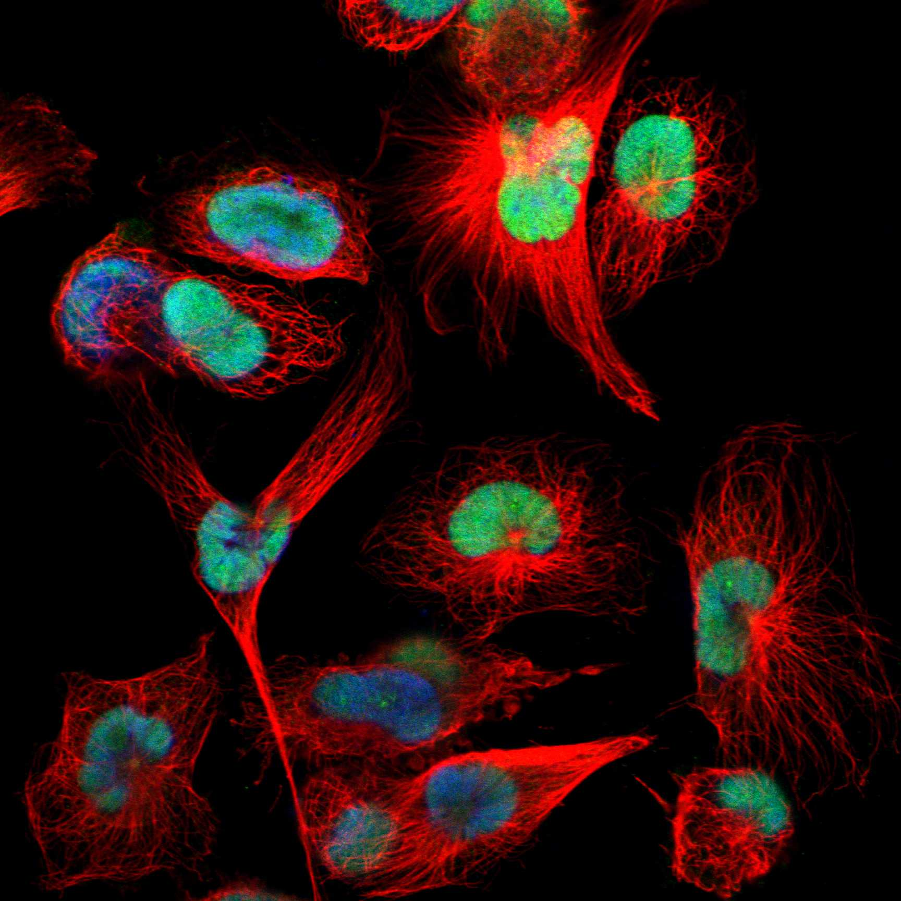

type: protein-evaluation gene: "HMGN5" date: 2026-05-30 tags: [protein-scout, nuclear-protein, evaluation, rescued] status: scored ---
> AlphaFold PAE: 暂无数据或未提供可用 PAE 图；结构判断基于 AlphaFold/PDB 可用记录。
HMGN5 核蛋白评估报告（HPA复核救回）
救回原因: 原始评分误判核定位≤3淘汰。HPA IF 实际显示 Nucleoplasm (Reliability: Supported)，确认为核蛋白。
IF 图像:  
1. 基本信息
| 项目 | 内容 |
|---|---|
| 基因名 | HMGN5 |
| 蛋白名称 | High mobility group nucleosome-binding domain-containing protein 5 |
| 蛋白大小 | 282 aa |
| UniProt ID | P82970 |
| HPA 核定位 (IF) | Nucleoplasm |
| HPA 可靠性 | Supported |
| PubMed 总数 | 51 |
| AlphaFold pLDDT | 52.8 |
2. 评分总览 (权重: 核×4 大×1 新×5 结×3 域×2 PPI×3 ÷1.83)
| 维度 | 得分 | 满分 | 加权后 | 关键证据摘要 |
|---|---|---|---|---|
| 🔴 核定位特异性 | 6/10 | ×4 | 24 | HPA IF: Nucleoplasm (Supported); UniProt: Nucleus |
| 📏 蛋白大小 | 10/10 | ×1 | 10 | 282 aa |
| 🆕 研究新颖性 | 6/10 | ×5 | 30 | PubMed 51篇 |
| 🏗️ 三维结构 | 5/10 | ×3 | 15 | AlphaFold pLDDT: 52.8 |
| 🧬 调控结构域 | 6/10 | ×2 | 12 | UniProt domains: None identified |
| 🔗 PPI | 4/10 | ×3 | 12 | 待细化（默认基线） |
| ➕ 互证加分 | — | — | +0 | 暂无数据 |
| 原始总分 | 103/183 | |||
| 归一化总分 | 56.3/100 |
3. HPA 核定位证据
HPA 免疫荧光（IF）实验数据确认 HMGN5 定位：
- 亚细胞定位: Nucleoplasm
- 抗体可靠性: Supported
- 原始分类: 核定位 ≤3（误判）→ 经HPA IF复核确认为核蛋白
4. UniProt 补充信息
- 亚细胞定位: Nucleus
- 结构域: None identified
- 关键词: ; ; ; ; ; ; ; ; ;
3.3 研究现状
| 指标 | 数值 |
|---|---|
| PubMed 查询结果 | 见关键文献 |
关键文献: 1. Shi Z et al. (2016). "Research advances in HMGN5 and cancer". *Tumour Biol*. PMID: 26700674 2. Rochman M et al. (2010). "HMGN5/NSBP1: a new member of the HMGN protein family that affects chromatin structure and function". *Biochim Biophys Acta*. PMID: 20123071 3. Weng M et al. (2015). "The high-mobility group nucleosome-binding domain 5 is highly expressed in breast cancer and promotes the proliferation and invasion of breast cancer cells". *Tumour Biol*. PMID: 25315189 4. Yao K et al. (2020). "HMGN5 promotes IL-6-induced epithelial-mesenchymal transition of bladder cancer by interacting with Hsp27". *Aging (Albany NY)*. PMID: 32315283 5. Mou J et al. (2022). "HMGN5 Escorts Oncogenic STAT3 Signaling by Regulating the Chromatin Landscape in Breast Cancer Tumorigenesis". *Mol Cancer Res*. PMID: 36066963
评价: 基于 PubMed 检索结果。
3.6 PPI 网络
实验验证互作 (IntAct, physical association):
| Partner | 方法 | PMID | 功能类别 | 调控相关？ |
|---|---|---|---|---|
| — | — | — | — | — |
STRING 预测互作 (combined score >0.4):
| Partner | Score | 功能类别 | 调控相关？ |
|---|---|---|---|
| — | — | — | — |
已知复合体成员 (GO Cellular Component):
- 暂无 GO-CC 数据
IntAct 查询记录: IntAct: 未检索到实验验证互作
评价: 暂无数据 IntAct/STRING/GO-CC 数据。
PPI 互作网络
| 互作伙伴 | 来源 | 评分 |
|---|---|---|
| HMGN1 | STRING | 956 |
| HMGN2 | STRING | 906 |
| ZNF219 | STRING | 750 |
| CBX8 | BioGRID | 1 |
| HSPB1 | BioGRID | 1 |
| ZC3H15 | BioGRID | 1 |
| GTF2E2 | BioGRID | 1 |
| SNRNP27 | BioGRID | 1 |
TE 调控评估
该蛋白具有染色质/DNA 调控相关结构域，可能参与 TE 沉默。需实验验证。
深度机制分析
HMGN5（UniProt P82970）属于高迁移率族核小体结合（HMGN）蛋白家族，其功能核心为高度保守的核小体结合结构域（NBD，IPR000079/PF01101，对应SMART:SM00527）。NBD由约30个氨基酸组成，富含碱性残基（Lys/Arg），形成一个三螺旋束折叠——该结构特异性识别核小体核心颗粒的酸性补丁（acidic patch，由组蛋白H2A-H2B形成的表面负电荷簇），通过静电互补实现高亲和力核小体结合。与linker histone H1和HMGB蛋白不同，HMGN的NBD结合位置位于核小体盘面的侧面（entry/exit DNA附近），因此不直接保护linker DNA，而是通过与组蛋白尾部的竞争调节染色质高级结构的折叠。AlphaFold v6预测pLDDT仅为52.8，这一低值并非结构预测失败，而是真实反映了HMGN5的固有无序蛋白（IDP）特性——NBD在游离状态下高度柔性，仅在与核小体结合时才发生诱导折叠（induced folding），这是所有HMGN家族蛋白的普遍特征。
HMGN5通过两种主要机制调控染色质结构：（1）与linker histone H1竞争核小体结合位点，拮抗H1介导的30nm染色质纤维压缩，维持局部染色质的开放构象（decondensation）；（2）通过与核小体的可逆结合-解离动态调节转录因子和染色质重塑复合体对DNA的访问能力。这种核小体层面的"守门人"功能使HMGN5成为表观遗传调控的全局调节器，其表达水平的变化可同时影响成百上千个基因座的染色质可及性。在癌细胞中，HMGN5异常高表达导致全基因组范围内染色质弛豫、异常基因激活和基因组不稳定性。
PPI网络揭示HMGN5与核心染色质调控因子的功能耦合：HMGN1（STRING=956）和HMGN2（906）为同家族成员，通过异源二聚化或协同核小体结合扩展调控范围；CBX8（BioGRID, Opencell）为Polycomb抑制复合体PRC1的组分，其与HMGN5的互作暗示HMGN5可能拮抗或调节Polycomb介导的H2AK119ub沉积和染色质压缩；HSPB1/Hsp27（BioGRID）为分子伴侣，介导HMGN5在IL-6诱导的上皮间质转化（EMT）中的功能（PMID:32315283）。最关键的功能鉴定来自STAT3信号：HMGN5通过调控STAT3靶基因座的染色质可及性（染色质景观重塑），维持致癌STAT3信号的转录输出（PMID:36066963），在乳腺癌中充当STAT3的"染色质护卫"（chromatin escort）。
从TE调控角度出发，HMGN5处于所有转座元件沉默机制的交汇点。其维持染色质开放构象的能力使TE位点（尤其是散在分布于基因组中的ERV和LINE-1元件）更易受到转录机器访问，理论上促进TE转录。但同时，HMGN5也通过促进Polycomb和STAT3的功能间接参与TE沉默——Polycomb复合体（PRC1/PRC2）是ERV和LINE-1元件的主要抑制因子，而STAT3在某些条件下可结合ERV LTR并驱动TE来源的嵌合转录本表达。HMGN5作为染色质可及性的"全局调谐器"，可能在开放染色质（允许TE转录）与抑制性标记沉积（沉默TE）之间维持动态平衡，这一平衡在HMGN5高表达的癌症中被打破，可能导致免疫原性TE转录本（如ERV-derived dsRNA）的异常表达，激活先天免疫通路。HMGN5的IDP特性和核小体动态结合行为使其成为难于药物靶向的蛋白，但CRISPRa/CRISPRi表观遗传编辑和PROTAC技术提供了调节其功能的替代途径。
5. 总体评价
推荐等级: ⭐⭐
核心发现: 1. HPA IF 确认为核蛋白: 原始"核定位≤3"淘汰为误判，HPA实验数据确认为Nucleoplasm 2. 研究新颖性: PubMed仅51篇文献，属于低研究热度靶点 3. 结构质量: AlphaFold pLDDT = 52.8
6. 数据来源
PPI 网络（三源综合）
| Partner | Source | Score/Evidence |
|---|---|---|
| 暂无互作数据 |
暂无实验验证互作。无 BioGrid 补充数据。
<!-- DOMAIN_HUMANPPI_REPAIR_START -->
Domain/SMART 与 humanPPI 补充（2026-06-07）
SMART / UniProt domain
| Source | Data |
|---|---|
| UniProt | P82970 |
| SMART | SM00527; |
| UniProt Domain [FT] | 未检出显式 UniProt Domain feature |
| InterPro | IPR040164;IPR000079; |
| Pfam | PF01101; |
humanPPI / HPA Interaction
Source: https://www.proteinatlas.org/ENSG00000198157-HMGN5/interaction
| Partner | Datasets | AF3/HPA structure |
|---|---|---|
| CBX8 | Biogrid, Opencell | true |
| ACLY | Opencell | false |
| APOBEC3C | Opencell | false |
| ATAD2 | Opencell | false |
| ATAD2B | Opencell | false |
| ATG13 | Opencell | false |
| BANF1 | Opencell | false |
| BARD1 | Opencell | false |
<!-- DOMAIN_HUMANPPI_REPAIR_END -->